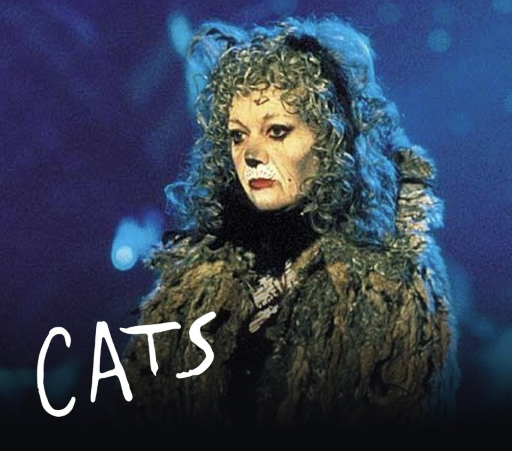

Un piccolo progetto per chi ha ancora
voglia di aprire le porticine del calendario dell’avvento...
ma senza trovarci cioccolatini.
Apriamo le porte alle idee!
dall’1 dicembre su oltrelasiepe.net

Bella canzone! Povero Celentano, neanche un prete per chiacchierare era rimasto in città...
Ma se si annoiava perchè non è partito per le spiagge con lei?
Interessante che il pomeriggio è "azzurro" perchè proprio questo colore?
Il Blu di Modugno e l'Azzurro di Celentano, la sfumatura cromatica accomuna queste due canzoni, tra le più famose nel mondo
Canzone bellissima, però consiglio di godersi l'azzurro della natura e la compagnia di se stessi, senza che il proprio benessere dipenda dalla presenza di un'altra persona!
Bello
La cantavo sempre con mia mamma quando ero piccola!
La colonna sonora di tanti momenti belli...
Il treno dei desideri...all'incontrario va
Spunto #10
La scoperta della J/Psi (1974)
I fisici dell'esperimento Adone dei Laboratori di Frascati
Spunto #9
Le ragazze (2023)
I Neri per caso, Paola Cortellesi, Emanuela Fanelli, Geppi Cucciari e Carla Signoris

Spunto #8
Ho amato tutto, Tosca (2020)
Settimana #1
Quale spunto ti è piaciuto di più?
Puoi selezionare quanti spunti vuoi

Spunto #7
Memory, Cats, Elaine Page (1998)

Spunto #6
Machu Picchu, Perù

Spunto #5
X colpa di chi, Zucchero (1995)

Spunto #4
Totò Peppino e la...malafemmina, Camillo Mastrocinque (1956)

Spunto #3
A bocca chiusa, Daniele Silvestri (2013)
con Paola Cortellesi
Per chi ha fretta, l'esibizione inizia davvero a 1:14

La canzone è davvero una perla del cantautorato italiano, ogni verso esprime una verità detta in parole semplici, che il dialetto romanesco rende ancora più popolari. Questa esibizione poi è molto emozionante, la Cortellesi sa proprio fare tutto
Semplicemente splendida ♥️
Emozionante
E' stato davvero tanto emozionante. Non avevo mai sentito questa canzone, ma è bellissima, mi ha lasciata senza parole. Lei una diva da capo a piedi, penso sia l'attrice italiana che preferisco in assoluto. Caleidoscopica pura
Adorable!
Bella canzone anche se non è il mio genere
A un certo punto della canzone viene nominato il presepe. Mi è venuto in mente un bimbo di sette anni, che ieri, passando affianco ad una sacra famiglia nel cortile di un oratorio, mi ha chiesto cosa fosse.
La bellezza salverà il mondo
Spunto #2
Non ci resta che piangere, Troisi e Benigni (1984)
Grande Troisi....«Ricordati che devi morire... sì, sì, mo me lo segno»
E' stato bello anche se non ci ho capito granch√© üòÖüòÖüòÖ
Troisi mi fa troppo ridere, una bravura travolgente che mette il buon umore
Sì ma chi siete? Dove andate? Che cosa volete?
Rido. Mi ha portato alla mente ricordi bellissimi. Sin da piccola ho sempre giocato a scopa, uno dei tanti giochi che ha unito tutti da generazioni :)
L'espressività e la gestualità di Troisi sono pazzesche, quasi uno non realizza che le carte non le ha davvero in mano...
Stupenda questa scena! Ho sorriso dall'inizio alla fine, è un umorismo che secondo me ormai si è un po' perso nella nostra società, una classe di altri tempi quasi... Penso di preferirlo a mille goliardate di questi anni viste in tv. PS: Leonardo che impara scopa mi ricoda me quando qualcuno mi spiega un qualsiasi gioco di carte haha!
Troisi è un mito! Rivedrei ogni scena 100 volte perché ogni volta è uno spasso!
Non ho mai imparato a giocare a scopa, anche se mi piacerebbe farlo, ma molto probabilmente farei la stessa fine del povero Leonardo, capirei ma non capireiüòÇ
Troisi era solo un maestro senza il materiale didattico necessario, sono sicuro che con un bel mazzo di carte vero Leonardo avrebbe capito come fare. Vai Leo siamo tutti con te!
Troisi un grande, però poteva insegnargli briscola chiamata invece che scopa...
Un grazie speciale alle renne di Babbo Natale che consegnano sempre i nostri messaggi. È fondamentale che il mondo legga
Non ho visto il film, ma avendo come registi Troisi e Benigni deve essere un capolavoro! Guardando questa clip, penso che se qualcosa è di normale e comune conoscenza e comprensione in un periodo storico non é affatto scontato che lo sia anche in un diverso periodo! Influenzano le innovazioni tecnologiche, le nuove abitudini e stili di vita, le diverse mentalità...
In fondo siamo un po' tutt* Leonardo, possiamo anche eccellere nel nostro campo ma ci sarà sempre anche la scopa a fregarci
Che bei tempi quando c'era ancora Leo! by CMB
Mi sento confuso
Eeh gli ingegneri da sempre nun capiscono nulla!!!
È stato come trovare un bel "cioccolatino"

Questa canzone è troppo bella! Mi ricordo che la cantavo con mia nonna da piccola <3
Quanto tempo è passato! Si vede dal volto di Cristiano!
Credo di essere stata tutte le versioni di Angiolina: quella che indossa le scarpette blu, quella che piange in cameretta e quella che impara a chiamare i ricordi con il loro nome. E so che le rivivrò periodicamente dato che sono tutte fasi che accompagnano un’evoluzione personale e un cambiamento. Personalmente non vedo l’ora di vedere come andrà avanti.
Mentre, sin da piccola, ho apprezzato il ritmo da subito incalzante di questa canzone, che mi fa venire sempre voglia di ballare, non posso dire lo stesso del testo che mi costava parecchio comprendere, in quanto mi creava una certa confusione associare e affiancare tutti questi elementi e queste "immagini", apparentemente prive di legame logico. Adesso però non è più così, tanto che quando spesso la ascolto, questa canzone, colgo sempre l'essenza del potere di De Andrè nel riuscire a raccontare una storia così profonda ricca di vari significati.
Grandi verità nascoste tra righe di filastrocca
Mi è piaciuta molto la canzone
L'inizio della canzone sembra bello, purtroppo non riesco mai ad arrivare alla fine della canzone by Top Quark
Canzone bellissima! Mi piace ascoltarla quando non sono impegnato a rompere la simmetria di gauge by Bosone di Higgs
Bella musica. Grande poesia, attualissima e qui le scarpette sono blu….un segno di speranza!?
Penso che tutti e nessuno possano essere Angiolina. Riflettendoci bene…chi non ha mai pensato certe cose o fatto certe esperienze. Credo che la maestria di De Andre sia far sembrare ridicola e divertente una canzone con un significato di incredibile profondità
Ennesima conferma che gli sbirri non sono molto simpatici
Pazzesca la dicotomia tra il testo estremamente triste e la musica così allegra :)
È la prima volta che sento questo brano e devo dire che mi è piaciuto, soprattutto la melodia è molto orecchiabile
Nel corso della vita é possibile dover affrontare una serie di difficoltà, di ogni natura, e inevitabile é il pensiero che accadano tutte solo a noi. La storia di Angiolina, con le sue tante delusioni d'amore ma a lieto fine, é un confortante ricordo che siamo tutti in compagnia, ed é un dolce invito a perseverare, perché la soddisfazione arriverà anche per noi, e a riguardare le difficoltà passate con tranquillità.
Non conoscevo questa canzone, molto più profonda della filastrocca da cui prende spunto; la musica è travolgente: impossibile rimanere impassibile!
Bella canzone
Paga il riscatto con le borse degli occhi piene di foto di sogni interrotti... Geniale e basta
Bella. Partiamo da lontano...